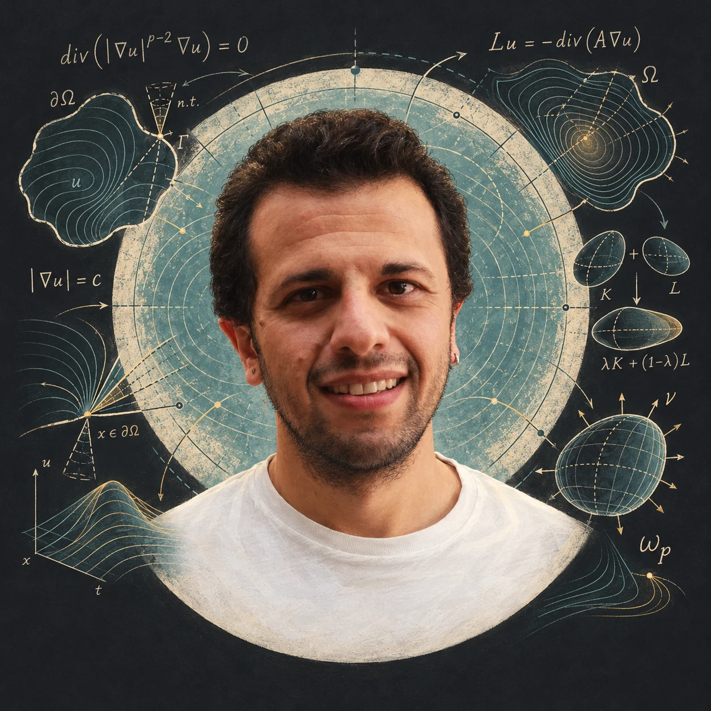
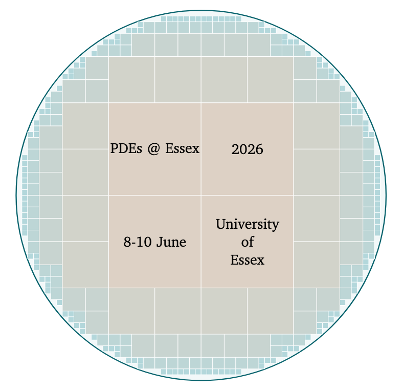
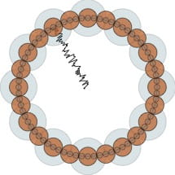
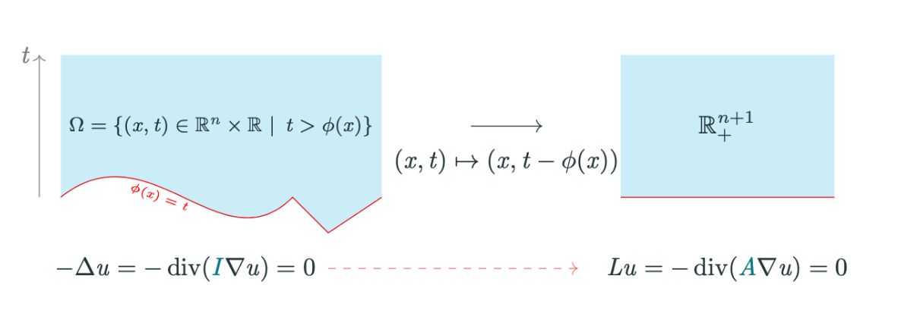

Equations & regularity
Variational methods for elliptic and parabolic equations. Regularity and free boundary problems in non-smooth domains.
div(|∇u|p−2∇u) = 0Analysis · Geometry · Partial differential equations

01 / About
I am a Senior Lecturer in Mathematics at the University of Essex, working across harmonic analysis, partial differential equations, potential theory and geometric measure theory.
My work brings together questions about nonlinear equations, the geometry of rough boundaries, and the ways in which harmonic measures capture that geometry.
I am part of the Analysis and Mathematical Physics research theme in the School of Mathematics, Statistics and Actuarial Science, where I also serve as Director of Research.
02 / Research
From the local behaviour of solutions
to the global geometry of a domain.
Variational methods for elliptic and parabolic equations. Regularity and free boundary problems in non-smooth domains.
div(|∇u|p−2∇u) = 0How harmonic, p-harmonic and elliptic measures reflect the geometry and rectifiability of a boundary.
ω · ∂Ω · ℋn−1Brunn–Minkowski inequalities, their stability, and Minkowski-type problems for nonlinear elliptic equations.
λK + (1−λ)L03 / Publications & preprints
Loading publications…
No publications match your search. Try a different title, author or topic.
04 / Teaching & supervision
I teach analysis and differential equations, and supervise research at the interface of PDEs and geometry.
Teaching history & course materialsLimits, continuity and the foundations of analysis.
Functions of a complex variable and their applications.
Tools for understanding change, from ODEs to PDEs.
Research supervision
PhD · 2023–2026
Postdoctoral researcher · 2022–2024
05 / Mathematical community
Coming up · Cambridge
2027
–
Isaac Newton Institute
I am co-organising this four-month research programme at the Isaac Newton Institute for Mathematical Sciences.
Explore the programmeA series connecting analysis, geometry and partial differential equations at the University of Essex since 2022. Explore the three most recent meetings below.

View figure· Colchester
Analysis of PDEs and Calculus of Variations with Applications
Event page
View figure
View figure06 / Get in touch
For research conversations, PhD enquiries
and potential collaborations.
Find me
STEM 5.12